Обзор
Картирование деталей — это простой метод добавления деталей поверхности (микро и макро) с относительно низкими затратами, с точки зрения памяти и производительности.
| Подробная карта выключена | Подробная карта включена |
|---|---|
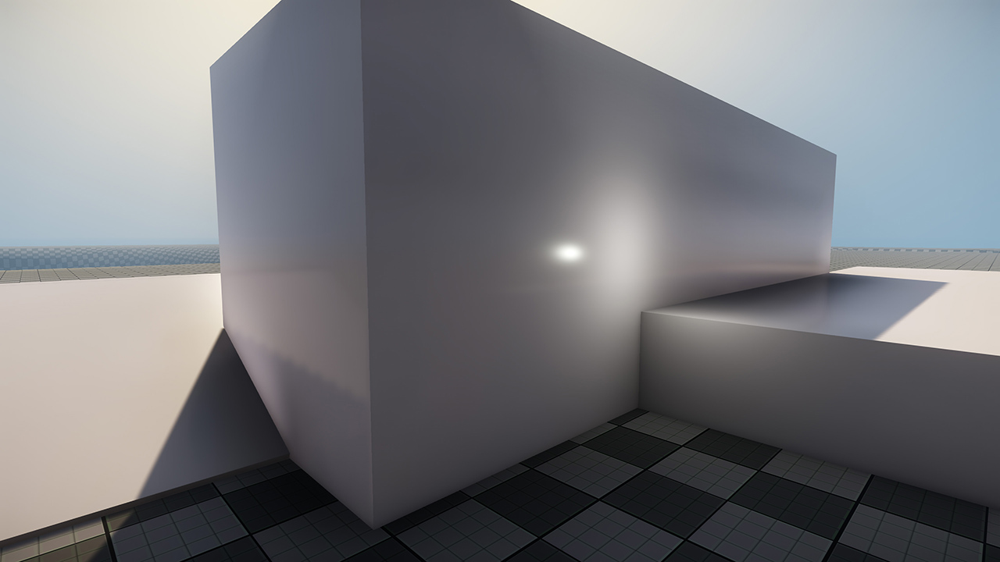 | 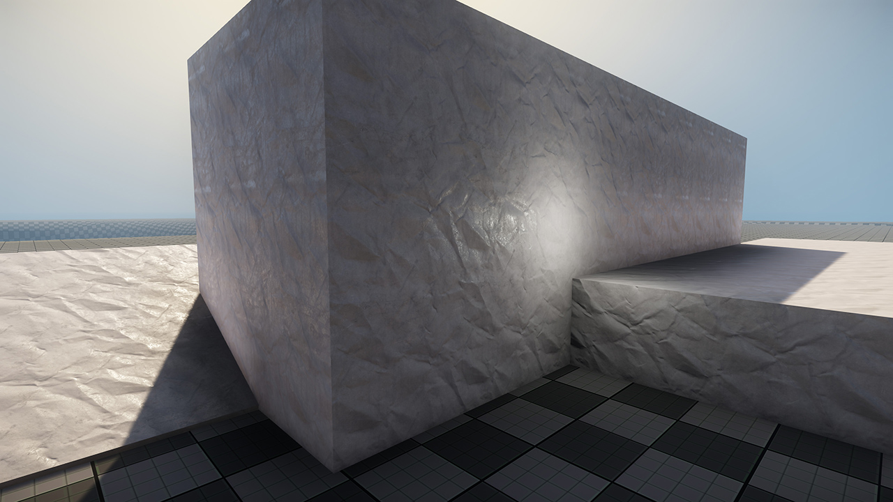 |
| Простой серый диффузный с высоким блеском | |
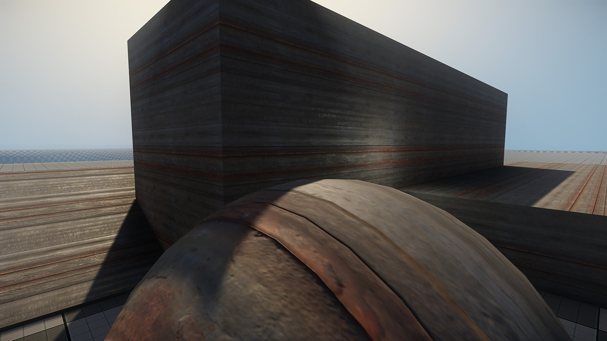 | |
| Полный набор текстур: Diffuse, Normals, Glossmap. | |
Создание текстур
CRYENGINE использует особый подход к картам детализации, часто называемый «унифицированными» или «объединенными» картами детализации.
Причина этого в том, что карты деталей в CRYENGINE включают не только информацию о нормалях, но также информацию о диффузии и блеске.
Каналы организованы следующим образом:
- Красный: Диффузный
- Зеленый: Нормальный красный
- Синий: Блеск
- Альфа: Нормальный зеленый
Если вы конвертируете существующую карту нормалей в карту деталей, вы можете взять существующие красный/зеленый каналы и поместить их в зеленый/альфа-каналы соответственно.
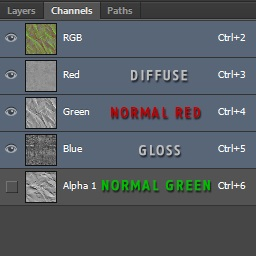
Пример
Чтобы продемонстрировать, как создать объединенную подробную карту, мы возьмем существующую карту нормалей RGB:
Слева направо: каналы RGB, красный канал, зеленый канал, синий канал. 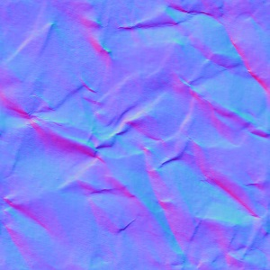 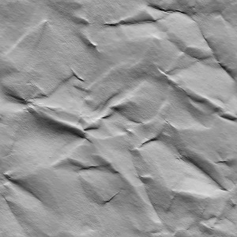 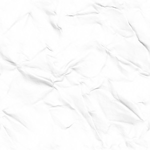
- Создайте Альфа канал и поместите Зеленый Направляйтесь в него.
- Выберите Красный канал и вставьте его в Зеленый канал.
Текстура теперь должна выглядеть примерно так:
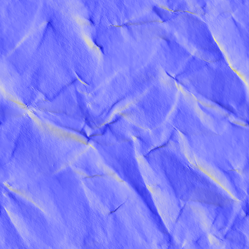
Теперь, для Красный и Синий каналы, которые мы собираемся добавить Диффузный и Блеск карта. - Выберите подходящий Диффузный текстуру и поместите ее в Красный канал
- Выберите подходящий Блеск текстуру и поместите ее в Синий канал.
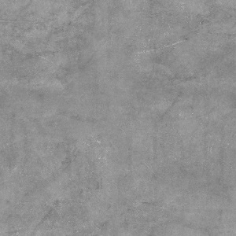 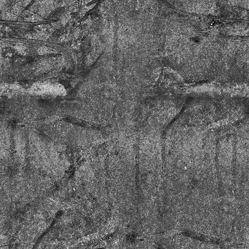
Слева: диффузная градация серого, справа: карта блеска градаций серого
Текстура теперь должна выглядеть примерно так (в зависимости от яркости каналов R/B цвет может меняться):
Слева направо: каналы RGB, красный канал, зеленый канал, синий канал, альфа-канал. 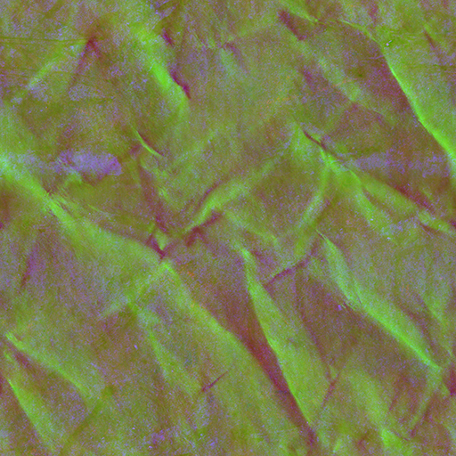 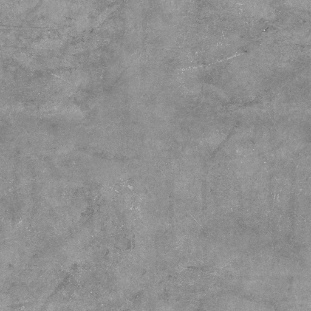 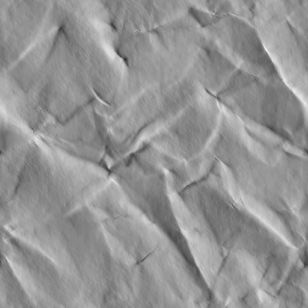 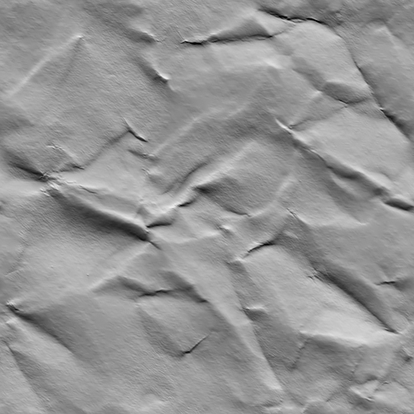
CryTif Экспорт
Для объединенных детальных карт доступны два варианта: Detail_MergedAlbedoNormalsSmoothness (с использованием сжатия BC7) или дополнительного _Lossless формат.
Обратите внимание, что формат Lossless следует использовать с осторожностью, поскольку размер файла будет в 4 раза больше.
Детальные карты чаще всего имеют довольно большую мозаику, это означает, что вы можете использовать меньшие разрешения без заметной потери качества, поскольку плотность текселей будет высокой из-за мозаики.
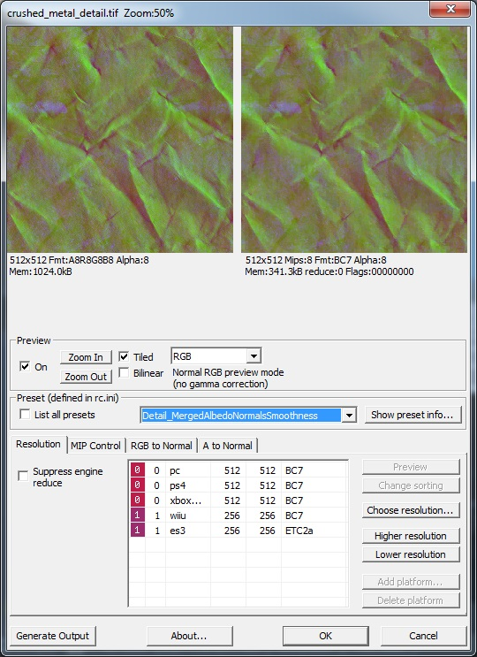
Настройка материала
Чтобы использовать карту деталей, ваш Материал должен использовать Освещенный шейдер. HumanSkin и Ландшафт.Слой шейдеры также используют карты детализации, но не карты объединенной детализации, а старые карты детализации в стиле карты нормалей.
- Чтобы активировать карту детализации, поместите путь к текстуре карты объединенной детализации в Деталь слот для текстур.
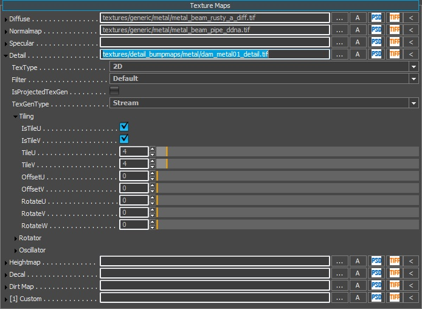
Как вы можете видеть на скриншоте выше, карта деталей плитка управляется непосредственно в слоте текстур.
активировать Ддетальное картирование в Параметры генерации шейдера.
Обратите внимание: вы не сможете установить этот флажок, если слот текстуры детализации пуст.
После включения активируются три новых ползунка:
- Детальный масштаб рельефа: управляет интенсивностью каналов зеленого/альфа (бывшие обычные каналы красного/зеленого).
- Детальный диффузный масштаб: управляет интенсивностью красного канала (диффузная текстура в оттенках серого).
- Детальная шкала блеска: управляет интенсивностью синего канала (глянцевая текстура в оттенках серого).
Масштаб рельефа детализации не зависит от других настроек материала, для его использования не требуется стандартная карта нормалей.
Однако шкалы Diffuse и Gloss смешиваются с Диффузный цвет и Глянцевость Настройки материала соответственно.
Если у вас есть диффузный цвет 0,0,0, вы не сможете видеть диффузный канал детализации вашей карты детализации. Если у вас 0 Glossiness, вы не увидите канал Detail Gloss.
Этот контроль над выходом независимых каналов обеспечивает большую гибкость и возможность повторного использования с подробными картами, поэтому экспериментируйте с различными настройками в соответствии с вашими активами!